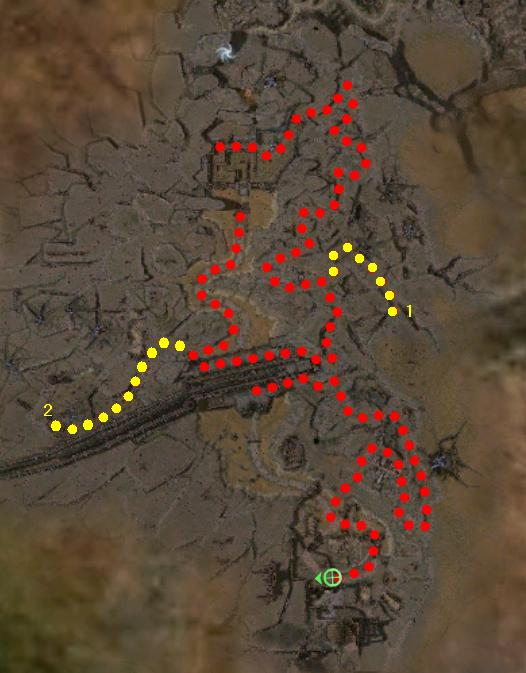

.jpg)
Elite: None / not listed
M4
Nolani Academy
◉ Mission Map

Click to enlarge · Local cache · Wiki
Summary (click to expand)
Sneak out of Nolani Academy and destroy the besieging Charr . Help Rurik push to Rin and sound the horn Stormcaller .
Region: Ascalon · Mission: 4 of 25 · Type: Cooperative
✓ Objectives
Return Prince Rurik south of the Wall to safety.
- Sneak out and ambush the Charr forces besieging the academy.
- Return to the Nolani Academy to rendezvous with the prince.
- Defend Prince Rurik on the way back to the capital city of Rin.
- *BONUS* Return the Tome of the Fallen.
- ADDED: Take Stormcaller to Horn Hill.
- ADDED: Save Rin.
→ Walkthrough
The goal of this mission is to return south of the Wall, back to the safety of Rin, beyond the Charr horde waiting both in the passage in front of Nolani Academy and behind the Wall. Prince Rurik will remain behind the gate in the starting area while players sneak out through the back door and ambush the Charr forces from behind. To perform this task, players will head south to the Wall and then loop back to Nolani Academy again. (Technically the lever could be used to open the gate, but that would give access to Nolani Academy to the Charr army and it's not recommended. High-level teams, however, can save a substantial amount of time.)
There is a lone Flaming Scepter Mage at the start of the mission, talk to him and he will follow and help you out. On your way to the Wall, you will also encounter allies (with Dual Shot), Warmaster Casana with an Ascalonian Ranger plus another three Lost Soldiers on the opposite side of the passage, near the Charr forces.
Clear the passage of Charr forces and Rurik will open the gate of Nolani and proceed to the Wall. Once there, a cinematic will trigger.
On the other side, Rin is found under attack. The only way to save the city now is by reaching Horn Hill and make use of the recently acquired Stormcaller. A second cinematic will trigger once there. Immediately afterwards, Rurik will rush forward in a desperate attempt to rescue Rin from several Charr invaders. Remember the Prince's death will cause mission failure. If you manage to save the Ascalon Prisoners, talk to them and they will follow you. The elementalist Charr boss Bonfaaz Burntfur will be standing at the very back of the ruins, kill him to complete the mission.
A high-level player with a hybrid running/fighting build can whizz through the mission in about 12-15 minutes. Simply bring a speed boost or two and a high-damage combo (preferably AoE) - the only necessary killing is the group immediately outside the Academy (pull the lever) and Bonfaaz Burntfur. Note that you have to go out the sneaky back exit for the bonus because Rurik is on a pre-programmed route and will not wait up - he will go to the Wall and activate the cinematic, then to Rin and activate Stormcaller.
Alternate strategy
The final battle against the Charr forces often results in Rurik's death (especially in Hard mode), mainly due to the large number of foes and the prince's suicidal tendencies. To avoid such a fate at the very end of the mission, players can use an alternative path that is completely clear of Charr and leads straight towards the last Charr boss Bonfaaz Burntfur, whose death grants mission completion.
The strategy consists of reaching the final boss before Rurik triggers Stormcaller's cinematic. After the first cinematic, instead of following him, turn west (right) and run south along the clear path (see wiki-map).
Avoid aggroing the mobs within the ruins of Rin and rescue the two Ascalon Prisoners under attack (just past the archway). Climb up the stairway and kill Bonfaaz Burntfur as fast as possible to complete the mission.
★ Bonus
The bonus consists of returning the Tome of the Fallen (point 1 on the wiki-map) back to its pedestal at the graveyard (point 2 on the wiki-map), and can be performed before freeing the way for Rurik. Slightly close to the Wall, you will spot Watchman Pramas on your radar, who will then ask that you take the tome back to where it belongs.
Proceed to the Wall but instead of heading north towards Nolani Academy, head westwards and across the broken steps to find the graveyard filled with hostile Spirits of the Fallen. Do not engage too many at once since there are hidden devourer pop-ups on the cliff above. At the furthest west side of the graveyard, place the tome on the tome pedestal. An Old Ascalon Spirit will then appear; talk to him and do not leave his compass range until the bonus is marked as complete.
◆ Hard Mode
- Pulling the lever at the start will almost certainly cause your party to die due to Meteor Shower and the AoE from Cyclone Axe, Hundred Blades and Ignite Arrows. Use the back route.
- Watch out for Skull Crack from the Spirits of the Fallen in the bonus graveyard area.
- Some of the bosses are separate to the groups of enemies nearby, and can be aggro'd separately.
☠ Bosses & Elites
Elite: None / not listed
Elite: None / not listed
Elite: None / not listed
Elite: None / not listed
Elite: None / not listed
Elite: None / not listed
Elite: None / not listed
Elite: None / not listed
Elite: None / not listed
✦ Tips & Notes
Skill recommendations
The party size is only four:
- Bond skills e.g. Life Bond to ensure Rurik's survival.
- Punish skills e.g. Empathy.
- Helps to bring minions and/or binding rituals.
- Watch for Charr Blade Storms who can remove your stances with Wild Blow.
- Consider having everyone in the party bring resurrection skills.
- Players with access to the EoTN expansion can use both the Rebel Yell title effect and Ebon Vanguard skills to their advantage.
Notes
- If your party is powerful enough, you can pull the lever to open the front gate and fight the Charr that swarm in; however, this is only recommended for characters with high levels.
- Complete exploration of this mission contributes approximately 1.0% to the Tyrian Cartographer title. Take Rurik all the way to Bonfaaz Burntfur, where Rurik will stop running, giving you the time needed to explore.
- After completing this mission, your party will be taken to Yak's Bend.
- Completion of this mission in Hard Mode will fill in page #5 of the Young Heroes of Tyria storybook.
- The nearby Charr will vanish or
- Some groups of Charr will attempt to invade the academy from the back.
- Prince Rurik will freeze, forcing you to restart the mission (i.e. if you open the gate before he finishes speaking).